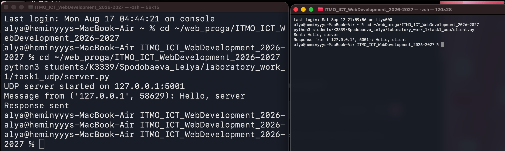
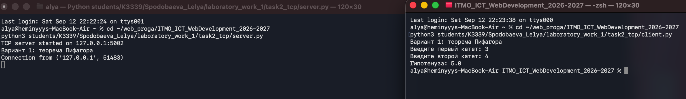
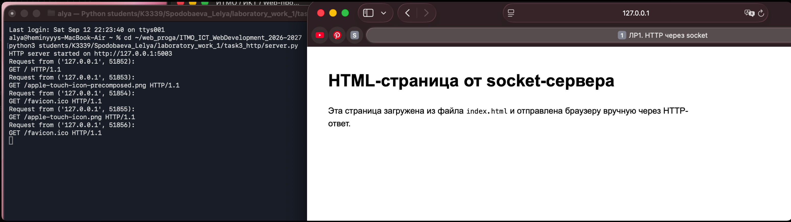
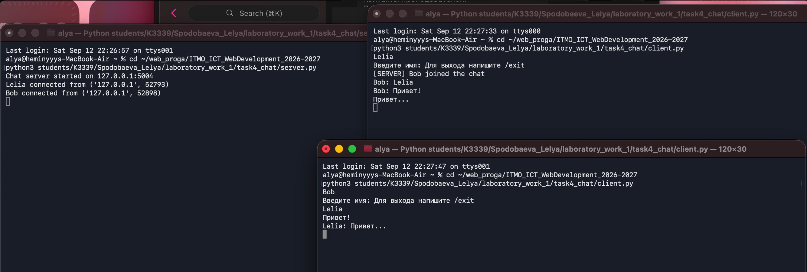
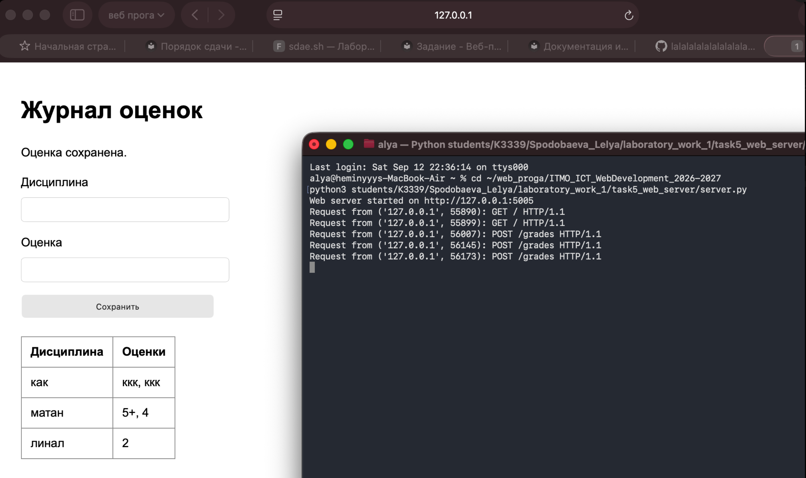

Лабораторная работа 1. Сокеты
Цель работы
Изучить принципы межсокетного взаимодействия и реализовать несколько клиент-серверных приложений на Python с использованием библиотеки socket.
Структура файлов
Код лабораторной работы находится в папке:
students/К3339/Spodobaeva_Lelya/laboratory_work_1/
Работу выполнила: Леля Сподобаева, группа К3339.
| Папка | Назначение |
|---|---|
task1_udp/ |
UDP-клиент и UDP-сервер для обмена сообщениями |
task2_tcp/ |
TCP-клиент и TCP-сервер для математических вычислений |
task3_http/ |
HTTP-сервер, который отдаёт файл index.html |
task4_chat/ |
Многопользовательский TCP-чат с потоками |
task5_web_server/ |
Простой веб-сервер с обработкой GET и POST |
Практическое задание 1. UDP
В первом задании реализован обмен сообщениями по UDP: task1_udp/server.py и task1_udp/client.py. Клиент отправляет серверу сообщение Hello, server, сервер выводит его в терминал и отправляет ответ Hello, client.
Запуск (сервер и клиент — в разных терминалах):
python3 task1_udp/server.py
python3 task1_udp/client.py
Результат:

Sent: Hello, server
Response from ('127.0.0.1', 5001): Hello, client
Практическое задание 2. TCP-вычисления
Во втором задании реализован вариант 1: вычисление гипотенузы по теореме Пифагора (task2_tcp/). TCP-сервер принимает JSON-запрос с двумя катетами, считает c = sqrt(a^2 + b^2) и возвращает результат клиенту.
python3 task2_tcp/server.py
python3 task2_tcp/client.py
Проверила на катетах 3 и 4 — гипотенуза 5.0, всё сошлось:

Формат обмена — обычный JSON:
// запрос клиента
{"a": 3.0, "b": 4.0}
// ответ сервера
{"status": "ok", "result": {"c": 5.0}}
Если катет отрицательный или нулевой, сервер возвращает {"status": "error", "message": "..."} вместо падения — это проверила отдельно, вводом -1.
Практическое задание 3. HTTP и HTML
Здесь сервер (task3_http/server.py) вручную собирает HTTP-ответ: статус 200 OK, заголовки Content-Type, Content-Length, Connection: close, и тело — содержимое task3_http/index.html.
После запуска страница открывается в браузере по адресу http://127.0.0.1:5003.
python3 task3_http/server.py

Неожиданный момент: в логе видно, что браузер сам по себе шлёт ещё запросы на /favicon.ico и /apple-touch-icon.png — сервер их не различает и на любой путь просто отдаёт index.html, но по факту получилось, что страница всё равно открылась корректно.
Практическое задание 4. Чат
Многопользовательский TCP-чат (task4_chat/): сервер принимает несколько подключений, на каждое создаёт отдельный поток (threading). При подключении спрашивает имя, выход — по команде /exit.
Проверяла с двумя клиентами одновременно, в трёх терминалах (сервер + 2 клиента):
python3 task4_chat/server.py
python3 task4_chat/client.py

[SERVER] Bob joined the chat
Bob: Привет!
Lelia: Привет...
Сообщения одного клиента рассылаются всем остальным, кроме отправителя (broadcast), это видно по логу — сервер сам себе ничего не шлёт.
Практическое задание 5. GET/POST веб-сервер
Простой веб-сервер на socket (task5_web_server/server.py), без каких-либо фреймворков, вручную разбирает HTTP-запросы:
| Метод | URL | Действие |
|---|---|---|
| GET | / |
HTML-страница с формой и таблицей оценок |
| POST | /grades |
Сохраняет дисциплину и оценку в grades.json |
python3 task5_web_server/server.py
Открывается по http://127.0.0.1:5005. Заполнила форму несколько раз для разных дисциплин — сервер дописывает оценки в grades.json:

{
"как": ["ккк", "ккк"],
"матан": ["5+", "4"],
"линал": ["2"]
}
В логе видно, что GET-запросы просто открывают страницу, а каждое сохранение формы — это отдельный POST /grades; сервер обрабатывает запросы по очереди, в одном потоке, без каких-либо фреймворков.
Вывод
Реализовала обмен по UDP и TCP, ручную сборку HTTP-ответов, многопользовательский чат на потоках и веб-сервер с обработкой формы.
Больше всего времени заняло задание 5 — там я сначала читала запрос одним recv(), как в задании 3, и POST с длинным телом обрезался, пока не разобралась, что нужно ориентироваться на Content-Length и дочитывать данные, пока тело не наберётся полностью. В чате (задание 4) не сразу учла, что при отключении клиента sendall может упасть с ошибкой — пришлось оборачивать рассылку в try/except, иначе падал весь поток при обрыве соединения одного из пользователей. В остальном сокеты оказались проще, чем ожидала — самое сложное было не в протоколах, а в мелочах вроде разбора сырых байтов запроса.